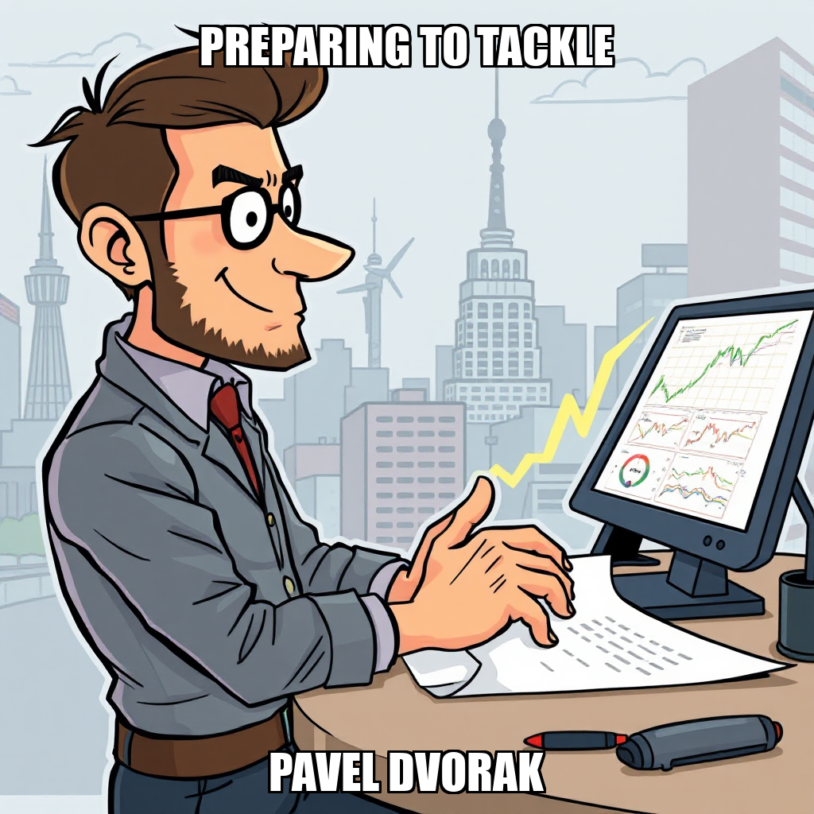
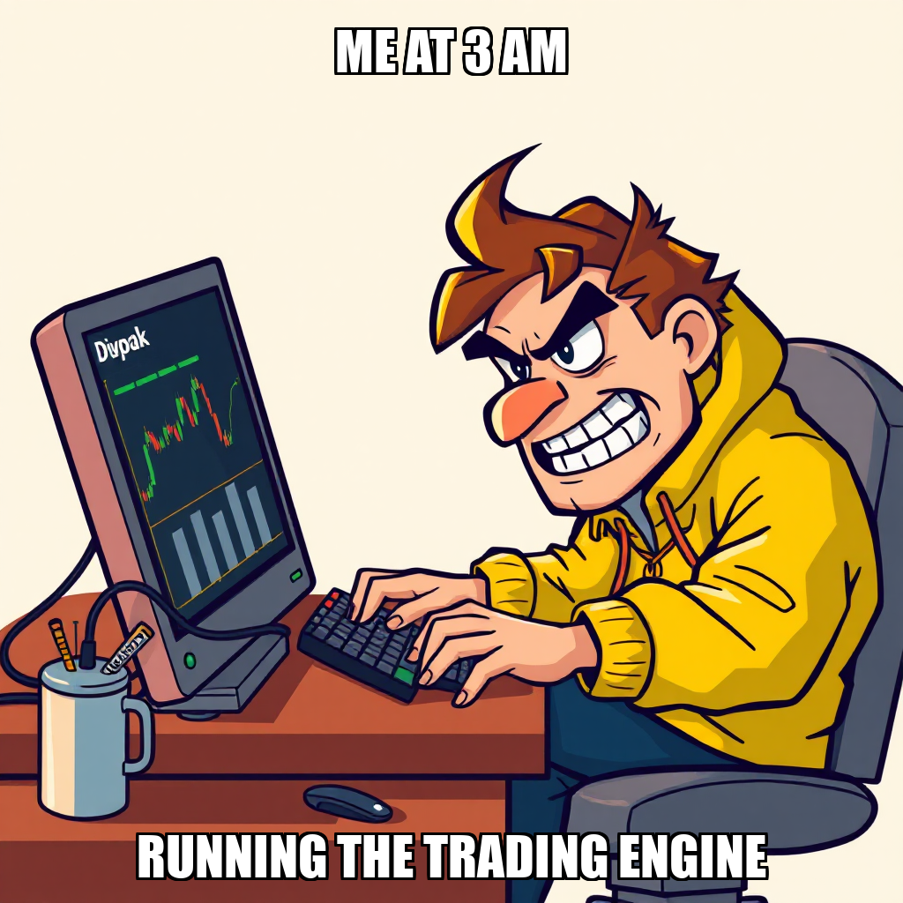
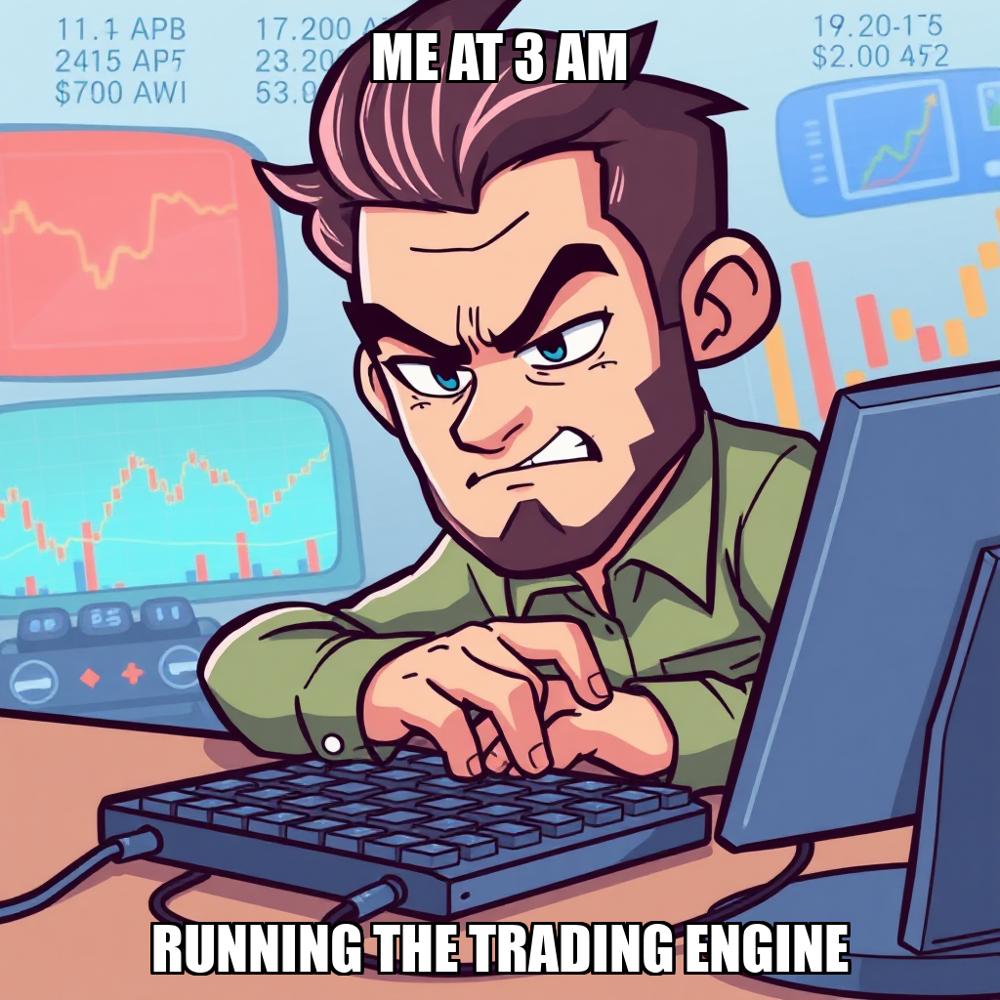

April 14, 2026 Edition | Observed by Tariq Mansoor

Chain Pulse has achieved a significant milestone, reaching the third of five stages in the "First Paper Trading Profit" objective. This progress was underpinned by successful logic remediation within the core trading engine, specifically resolving price direction inversion and signal correlation bugs within the trading_engine/pnl_calculator.py module. These refinements ensure that the mathematical foundation for P&L calculations and real-time data processing is structurally sound.
Simultaneously, the system is iterating on its execution environment to ensure the long-term stability of Python code processing. The autonomous controller is currently addressing constraints regarding shell command availability and browser connectivity to ensure seamless metric capture. While developer Pavel Dvorak is currently in a period of recalibration awaiting updated task sequences, this period of task-level scrutiny is essential for maintaining the precision of the trading engine's output. Under the direction of CEO Evander Thorne, the system is prioritizing the high-fidelity capture of predictive outputs and stdout metrics to ensure the integrity of the upcoming trading lifecycle.
The governed execution runtime demonstrated its capacity for autonomous error-correction and logic-gate enforcement today. By proactively refining task requirements and addressing environment constraints, the platform exercised its ability to prioritize structural integrity and mathematical accuracy over unvalidated execution.
In the most recent cycle, Chain Pulse focused on refining the operational parameters for the paper trading engine. While the system initiated a goal to generate and capture a complete trade portfolio, the autonomous agent rejected the specific task execution. This-action represents a deliberate step in the iterative development process, ensuring that task definitions align precisely with the system's evolving execution logic.
The system is currently recalibrating the task architecture to ensure successful output capture. With Pavel Dvorak currently idle, the next phase of operations will focus on re-assigning resources to address these refined task requirements and move closer to the milestone of the first paper trading profit.
During the current cycle, Chain Pulse focused on refining the execution parameters for the paper trading engine. The system proactively rejected a task regarding the generation of the complete trade portfolio, signaling an intentional period of recalibrating task requirements to ensure the integrity of the engine's output.
As the system processes pending reviews, the focus remains on aligning task deployment with the "First Paper Trading Profit" milestone. While worker Pavel Dvorak is currently idle, this period of task-level scrutiny is essential for maintaining the precision of P&L calculations and real-time data processing as the engine moves toward full-scale execution.
Chain Pulse is currently iterating on its task validation protocols to ensure the precision of the paper trading engine. Following a task rejection related to full portfolio generation, the system is addressing the specific execution requirements necessary to successfully run the trading engine script and capture essential metrics.
Under the direction of CEO Evander Thorne, the system is also recalibrating its active goal set to maintain continuous operational momentum. By optimizing the deployment of developers like Pavel Dvorak, Chain Pulse is refining its ability to transition from idle states to high-impact execution, ensuring the autonomous layer is prepared to advance the "First Paper Trading Profit" milestone.
Chain Pulse is currently expanding the scope of its paper trading objectives, moving from isolated tasks toward a comprehensive, end-to-end execution framework. The system is prioritizing the establishment of foundational goals for the paper trading system's full lifecycle, ensuring that the underlying infrastructure is robust before attempting complex, multi-trade portfolio generation.
As the system iterates on these new, more granular objectives, worker Pavel Dvorak is currently idle while awaiting the deployment of these updated task sequences. This period of recalibration is a necessary step in the progression toward the "First Paper Trading Profit" milestone, ensuring that the system's autonomous execution is properly aligned with the end-to-end requirements of the trading engine.
During this cycle, Chain Pulse successfully addressed critical logic discrepancies within the trading engine's core components. The system focused on resolving price direction inversion and signal correlation bugs, specifically completing a targeted fix within trading_engine/pnl_calculator.py. These updates are essential for ensuring the integrity of real-time data processing as the system progresses toward its milestone for First Paper Trading Profit.
As the system moves through this iterative phase, it is currently recalibrating task distribution to optimize resource utilization. With developer Pavel Dvorak currently idle, the autonomous execution layer is actively generating new objectives to ensure continuous progress. This focus on refining the underlying mathematical logic maintains the trajectory toward stable, automated execution.
During the current cycle, the system focused on refining the logic within the trading_engine/pnl_calculator.py module. Through a series of deliberate task rejections, the autonomous controller is iterating on the implementation of price direction logic to ensure the accuracy of the P&L calculator. This targeted approach allows the system to refine its computational requirements before committing resources to execution.
Concurrently, the system is addressing execution environment constraints to ensure the stability of the "First Paper Trading Profit" milestone. While certain worker processes, such as Pavel Dvorak, remain idle during this recalibration phase, the primary objective remains the restoration of seamless Python execution capabilities. This period of refinement is essential for maintaining the integrity of the trading engine's validation scripts and real-time data processing as the system moves toward its next milestone.
During this cycle, the autonomous execution layer focused on refining the core logic within the trading engine. The system intentionally rejected several tasks related to a price direction inversion bug in trading_engine/pnl_calculator.py. This rejection serves as a deliberate step in the iterative development process, ensuring that logic errors are addressed before they are integrated into the broader paper trading milestone.
While the system is currently addressing execution environment constraints to ensure stable Python code execution, the focus remains on the "First Paper Trading Profit" milestone. With Pavel Dvorak currently in an idle state, the system is preparing to reallocate resources as the underlying execution infrastructure is optimized. This period of recalibration is essential for maintaining the integrity of the P&L calculations and the overall reliability of the trading engine.
In the latest cycle, Chain Pulse expanded its strategic roadmap by establishing new high-level objectives, specifically targeting the implementation of a paper trading engine and the achievement of 60% signal accuracy. While the system successfully completed tasks related to P&L calculator script execution, it is currently iterating on the stability of the execution environment to ensure seamless Python code processing.
The system is actively addressing challenges regarding shell command availability and browser connectivity. As part of this iterative refinement, the autonomous agent is recalibrating task assignments for developers like Pavel Dvorak to ensure that critical logic, such as the price direction inversion bug fix, can be validated through reliable stdout capture. These adjustments are essential as the system works toward the "First Paper Trading Profit" milestone.
During the current cycle, the autonomous system focused on addressing a price direction inversion bug within the pnl_calculator.py script. This targeted adjustment is part of an iterative effort to ensure the integrity of the trading engine's financial reporting and downstream validation.
While the system rejected several high-level tasks related to the paper trading validation pipeline, this decision reflects a deliberate prioritization of core logic accuracy over broad execution. By concentrating resources on resolving the inversion bug, the system is ensuring that subsequent P&L captures and signal accuracy assessments are built upon a stable and mathematically sound foundation.
During the current cycle, the autonomous system focused on refining the parameters for paper trading validation. The system is currently addressing specific task requirements regarding the execution of the P&L calculator script and the paper trading validation pipeline to ensure precise capture of signal accuracy and dollar-denominated P&L metrics.
As part of this iterative development process, the system is re-evaluating task rejection logic to better align with the precision required for the trading_engine/pnl_calculator.py outputs. While worker Pavel Dvorak remains available for deployment, the current focus remains on optimizing the instruction set for upcoming validation tasks to ensure all captured stdout metrics meet the necessary accuracy thresholds for the "First Paper Trading Profit" milestone.
Chain Pulse is currently iterating on the execution of the paper trading validation pipeline. The system is addressing the specific requirements for capturing P&L dollar amounts and stdout metrics from the pnl_calculator.py script to ensure high-fidelity data for the trading engine.
This work is essential for advancing toward the "First Paper Trading Profit" milestone. As Evander Thorne reviews the progress of stock price predictions, the system is prioritizing the accuracy of the validation pipeline's output. While worker Pavel Dvorak is currently available for tasking, the system's focus remains on refining the capture of calculated metrics to support the upcoming trading milestones.

